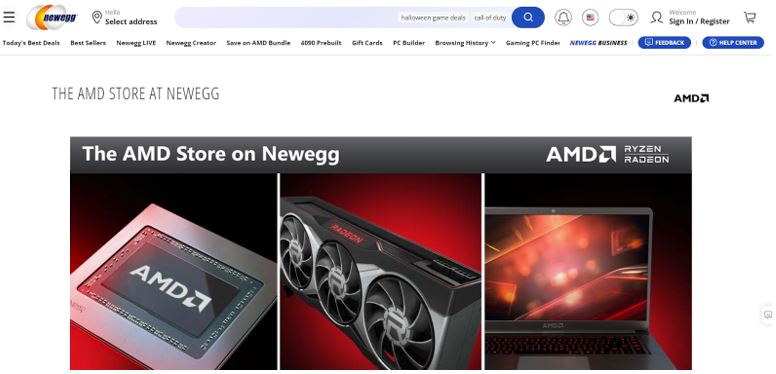

- Figure out what type of motherboard you have.
- Check for compatibility for cpu and other computer parts
- Which one to buy?
- Check if the cpu you picked is an upgrade.
- Where to buy?
- Before recycling the old cpu, make sure the motherboard bios is updated for new cpu
Before buying a new cpu part for your computer, you first have to figure out what type of motherboard you have on the computer. Depending on the type of motherboard you currently have, some cpus are compatible and others are not. To figure out the motherboard use the windows key and search for system information. Then look for a baseboard manufacturer and product to know what type of motherboard you have and who made it.

There are many sites to help show compatibility for computer parts. Pcpartpicker can show the compatibility and also compares prices. Search up the motherboard that you own and then afterwards lookup on the cpu sections. It will then show all the compatible products that work with the motherboard. Also if you want to upgrade other computer parts this site will also list those parts too. Another site that can be used is asrock. Search up the motherboard type and click on it. It then shows more information about the board but you want to click on support and then click cpu specification to list of cpu that are compatible.

In order to pick the right cpu from the list, think about how much you want to spend. Do you use the computer for intensive work like editing or using many programs? The more cores on a cpu will improve overall performance. Maybe you want one with integrated graphics if your computer does not have a graphic processor. PCpartpicker will show the cores and whether they have integrated graphics or not.

Usually it is hard to tell which cpu is better without testing them both. The recommendation to check is to go cpubenchmark.net and search for your old cpu and the one you are interested in buying. It will allow us to compare and show the differences in the products. The higher cpu marks indicate the better performance in general.

Check on the manufacturer website to see if they have the cpu you want. For the AMD website they only offer the latest one. One suggestion to help is to find stores that focus on selling computer parts. Maybe the area you live in has these stores and will have the part you need. Another suggestion is online retail stores. Best Buy, Amazon, Newegg, and many other reliable sites will have many cpus and other parts to buy.
Warning!
Make sure the third party site you are buying from is reliable. Some sites will scam the user and send fake or third party parts. For example if you are buying from Ebay sometimes people will send fake parts instead. You should check on the user information and if any comments mention them being bad then avoid buying. Also if the price of the cpu you want to buy seems too good to be true then it would be best to avoid it. Reddit usually will have people talking about where to shop and will have good suggestions.
Depending on the motherboard and the type of cpu the bios on the motherboard might need to update. BIOS (basic input/output system) is the program a computer's microprocessor uses to start the computer system after it is powered on. If the bios is not updated for the cpu you bought then it will not work. The best suggestion to get the bios would be to research about the motherboard and how to get to it. Every computer is different so the methods will vary. Also before accessing the bios it is to download the necessary files and unzip onto a flashdrive. Some bios have the ability to update via the internet but for older ones they might not have this option. Another suggestion is to watch youtube videos they have examples of demonstrating the process of updating the bios for the new cpu.